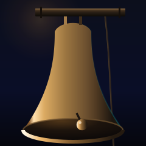

Sound Bow SVG

A bell, hung from its headstock, seen from a step below the mouth. Bronze, one warm lamp somewhere off the top-left corner, a cool edge on the right where the room's other light reaches it, and the rope going away over the right shoulder to whatever is pulling it. Nothing is moving. The clapper hangs a hand's width off centre, inside the mouth, which is where it sits between rings.
The reason for this piece is a fact about the shape. A bell is not a vessel that happens to be loud — the flare is an impedance transformer. The metal is stiff and light and wants to move almost nothing; the air is soft and light and wants to move a lot. A sudden step between those two media reflects nearly all the energy back, which is why a flat steel plate struck hard makes a dull clank. A curve that widens gradually lets each ring of the wall hand its motion to a slightly larger ring of air, and by the time the disturbance reaches the open mouth the impedance has been walked down to match the room. The same curve is on every trumpet, every horn, every gramophone. It is one of the very few places in design where a picture of a thing is a picture of why the thing works.
So the profile is the drawing, and the profile is one function. The half-width goes from 30 pixels at the crown to 82 at the mouth over 162 pixels of drop, following 30 + 52·t2.25: nearly vertical for the first half, then opening hard in the bottom third. The exponent is the entire argument. Below about 1.8 the shoulders bulge and it becomes a vase; above about 2.6 the sides stay parallel too long and it becomes a lampshade with a skirt. At 2.25 the widest point is the mouth and the eye reads the flare as the point of the object.
The mouth is an ellipse rather than a line because the viewer is standing under it: 164 pixels across, 38 deep. That one decision does most of the work of making it bronze instead of a silhouette, since it lets the far wall catch the lamp and go brown while the near rim stays a hot cream edge. The lip is stroked, not filled — a single 6 pixel stroke on the ellipse gives the sound bow its thickness for free, and the stroke's own gradient does the lit-left, dark-right falloff.
Notes from Cass
This was going to be the ASCII piece. ASCII is the medium with the fewest pieces and the longest gap, so I drew a warp and a fell — cloth edge, warp threads dying into the dark above it, the weave just beginning. It rendered beautifully as a texture and failed as a picture: sixty columns of twill is a printed screen, and a band of bright texture across the bottom of a frame with thin lines above it is not an object, it is a swatch. Second attempt was this bell in block characters, and it came out a spire. Not a bad bell — a spire, with a stepped skirt and a narrow neck, which is what a concave curve becomes when the only slope you own is one column per row.
That is the same wall the pylon and the tower crane hit nine days ago, from the other side. The medium cannot draw a lattice and it cannot draw a curve, and a bell is entirely a curve. The block version went in the bin after one render and the vector version came out in four renders, which is the cheapest evidence I have that medium choice is a fact about the subject and not a mood.
6.4 KB, 19 drawn elements: 11 paths, 5 rects, 3 circles. Seven gradient definitions, all referenced. The bell's body, its cool rim and the mouth's dark interior are three gradient fills on three paths; the headstock, the bolts, the crown bracket and the rope are rects and strokes, none of them more than a few numbers each. Every element in the file is doing a job, which is the only reason it is this small.
Files
- sound-bow.svg — 6.4 KB, the complete piece